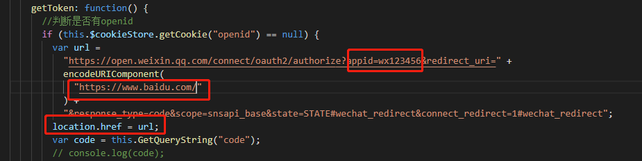
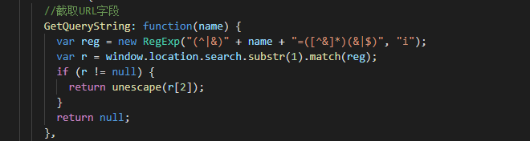

在小伙伴们开发微信公众号、小程序或者是在微信内置浏览器打开的项目时，会遇到的第一个问题就是如何获取openId，今天小编就给大家带来的是如何获取openId。
首先 我们要从微信开发者后台得到appid，这个appid是管理员在设置微信后台时获取的，而且是唯一的，而且还需要在微信后台设置回调域名。
其次 这些都准备好以后，我们就可以使用微信自带的方法获取openId：

注意：划线部分是要获取的openId和回调域名，而 location.href = url 是当页面第一次渲染时，自动获取openId，当然，这些还是准备工作

1 //截取URL字段
2 GetQueryString: function(name) {
3 var reg = new RegExp("(^|&)" + name + "=([^&]*)(&|$)", "i");
4 var r = window.location.search.substr(1).match(reg);
5 if (r != null) {
6 return unescape(r[2]);
7 }
8 return null;
9 },
10 getToken: function() {
11 //判断是否有openid
12 if (this.$cookieStore.getCookie("openid") == null) {
13 var url =
14 "https://open.weixin.qq.com/connect/oauth2/authorize?appid=wx1234567890&redirect_uri=" +
15 encodeURIComponent(
16 "https://www.baidu.com/"
17 ) +
18 "&response_type=code&scope=snsapi_base&state=STATE#wechat_redirect&connect_redirect=1#wechat_redirect";
19 location.href = url;
20 var code = this.GetQueryString("code");
21 // console.log(code);
22 axios({
23 url: "接口名" + code
24 }).then(res => {
25 // console.log(res);
26 if (res.data.code == 0) {
27 this.$cookieStore.setCookie("openid", res.data.result);
28 }
29 });
30 } else {
31 this.openid = this.$cookieStore.getCookie("openid");
32 }
33 },
我们要使用上图的方法来获取code值，通过接口，来获取openId，然后把openId存在cookie里每次调用就可以了。
这就是小编给大家带来的获取openId的方法，下面是完整代码。